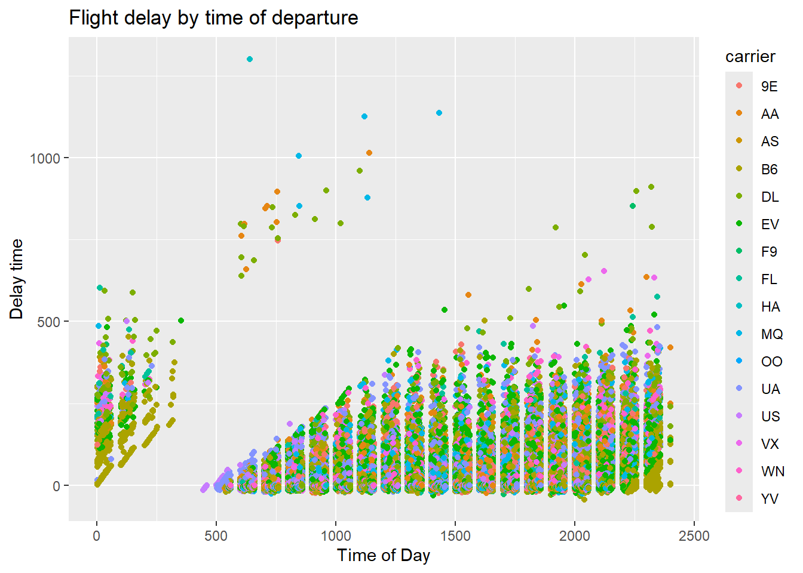

# Flights that depart in December or Januarydec_jan <- flights |>filter(month ==12| month ==1)#Or use %in%dec_jan <- flights |>filter(month %in%c(12, 1))glimpse(dec_jan)
# With help from solutions - use mutate to create speed variableflights |>mutate(speed = distance / (air_time /60)) |>arrange(desc(speed)) |>relocate(speed)
Does it matter what order you used filter() and arrange() if you’re using both? Why/why not? **ANSWER* Yes, after filter the data are smaller so it takes less computational power to arrange.
Columns
The most important verbs that operate on columns are:
mutate(), which creates a new column derived from existing columns, and
select(), which changes which columns are present, and
rename(), which changes the name of the column, and
relocate(), which changes the positions of the columns
Use mutate() to calculate the gain (how much time a delayed flight made up in the air) and the speed (in miles per hour):
#Include .before to add variables to left hand sideflights |>mutate(gain = dep_delay - arr_delay,speed = distance / air_time *60,.before =1 )
#Alternatively can use .after and/or variable names to put the new column in a sensible place
Alternatively, control which variables are kept with the .keep argument, “used” specifies only keep the columns that were involved in the mutate() step.
Use select() to reduce the number of columns in the dataset: ` It’s not uncommon to get datasets with hundreds or even thousands of variables. In this situation, the first challenge is often just focusing on the variables you’re interested in. select() allows you to rapidly zoom in on a useful subset using operations based on the names of the variables:
# Select columns by name:flights |>select(year, month, day)
Compare dep_time, sched_dep_time, and dep_delay. How would you expect those three numbers to be related?:
# Use mutate to see differences between scheduled and actual departure times, this should be the same as delayflights |>mutate(delay_new = sched_dep_time - dep_time,.after = dep_delay )
What does the any_of() function do? Why might it be helpful in conjunction with this vector? Answer any_of() uses each component of a vector
# Create a variable containing list of namesvariables <-c("year", "month", "day", "dep_delay", "arr_delay")# Combine with selectflights |>select(any_of(variables))
Does the result of running the following code surprise you? How do the select helpers deal with upper and lower case by default? How can you change that default?
Use slice_ functions to extract specific rows from within groups:
# Slice_max takes the row with the largest value of the variable specifiedflights |>group_by(dest) |>slice_max(arr_delay, n=1, with_ties =FALSE) |>relocate(dest)
How do delays vary over the course of the day? Illustrate your answer with a plot.
Steps:
Begin with the data
Map variables to the Aesthetics of the plot
Add geometric objects to represent the data (e.g. _bar, _line, _boxplot, _point)
Modify the Aesthetic mapping
Additional lines / regressions (e.g. linear model)
Improve the labels
Make colourblind friendly
ggplot(data = flights,mapping =aes(x = dep_time, y = dep_delay) ) +geom_point(mapping =aes(color = carrier) ) +labs(title ="Flight delay by time of departure",x ="Time of Day", y ="Delay time" )
Warning: Removed 8255 rows containing missing values or values outside the scale range
(`geom_point()`).

What happens if you supply a negative n to slice_min() and friends?
flights |>group_by(carrier) |>slice_min(dep_delay, n =-1)
Explain what count() does in terms of the dplyr verbs you just learned. What does the sort argument to count() do?
flights |>group_by(carrier) |>count(dest)
# A tibble: 314 × 3
# Groups: carrier [16]
carrier dest n
<chr> <chr> <int>
1 9E ATL 59
2 9E AUS 2
3 9E AVL 10
4 9E BGR 1
5 9E BNA 474
6 9E BOS 914
7 9E BTV 2
8 9E BUF 833
9 9E BWI 856
10 9E CAE 3
# ℹ 304 more rows
ANSWER: Count retruns the number of rows for each level of the variable
Suppose we have the following tiny data frame:
df <-tibble(x =1:5,y =c("a", "b", "a", "a", "b"),z =c("K", "K", "L", "L", "K"))# What do you think the output will look like:#This should just return the df with a note to say vars have been groupeddf |>group_by(y)
# A tibble: 5 × 3
# Groups: y [2]
x y z
<int> <chr> <chr>
1 1 a K
2 2 b K
3 3 a L
4 4 a L
5 5 b K
#This will return the dataframe but ordered by y (a's first then b's)df |>arrange(y)
# A tibble: 5 × 3
x y z
<int> <chr> <chr>
1 1 a K
2 3 a L
3 4 a L
4 2 b K
5 5 b K
#This will return two rows for y (a and b) with a column for the mean of xdf |>group_by(y) |>summarize(mean_x =mean(x))
# A tibble: 2 × 2
y mean_x
<chr> <dbl>
1 a 2.67
2 b 3.5
#This will return rows for y and z combinations, with a column for the mean of Xdf |>group_by(y, z) |>summarize(mean_x =mean(x))
`summarise()` has grouped output by 'y'. You can override using the `.groups`
argument.
# A tibble: 3 × 3
# Groups: y [2]
y z mean_x
<chr> <chr> <dbl>
1 a K 1
2 a L 3.5
3 b K 3.5
#This is the same as above but without the warning messagedf |>group_by(y, z) |>summarize(mean_x =mean(x), .groups ="drop")
# A tibble: 3 × 3
y z mean_x
<chr> <chr> <dbl>
1 a K 1
2 a L 3.5
3 b K 3.5
#Mutate adds a variable to the dataframe without grouping/transforming the other variables (x)df |>group_by(y, z) |>mutate(mean_x =mean(x))
# A tibble: 5 × 4
# Groups: y, z [3]
x y z mean_x
<int> <chr> <chr> <dbl>
1 1 a K 1
2 2 b K 3.5
3 3 a L 3.5
4 4 a L 3.5
5 5 b K 3.5
Agrregating and Sample Size
It is always important to add counts to aggregate data to be aware of the sample size: